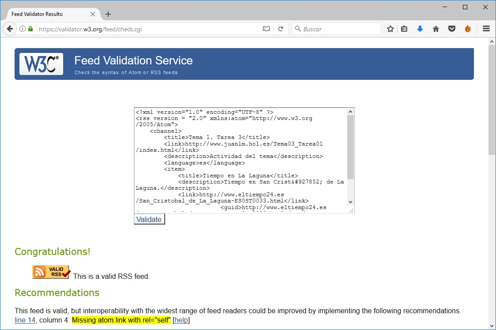
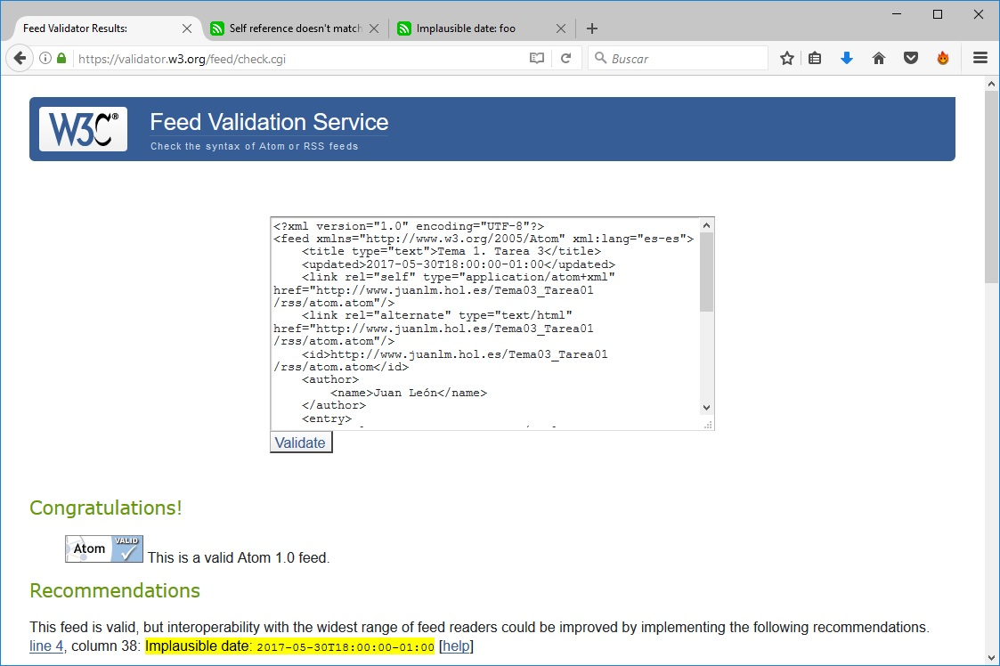

Lenguaje de marcas. 2016/2017. Tema 3. Tarea 1.
Juan León Marichal
Previsión meteorológica de La laguna
Captura de pantalla de la validación del documento RSS

Captura de pantalla de la validación del documento Atom
